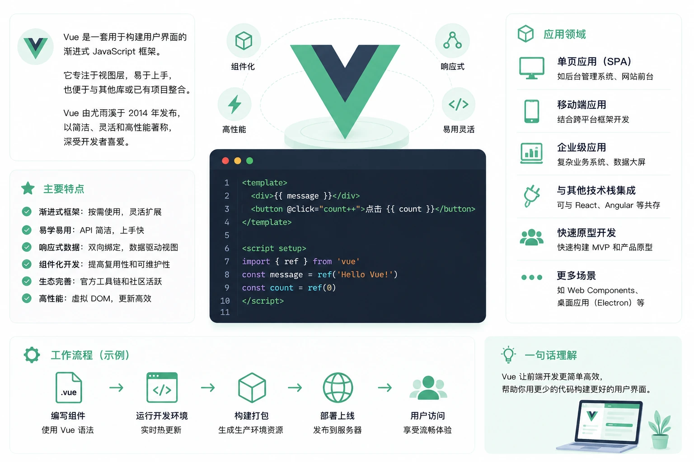

Vue3 简介
Vue3 是一个用于构建用户界面的渐进式框架。
渐进式意味着你可以根据项目需要，只引入 Vue 的一部分能力：从一个简单的页面交互增强，到构建完整的单页应用（SPA），乃至服务端渲染（SSR）应用，Vue3 都能胜任。
Vue3 是由尤雨溪（Evan You）主导开发的渐进式 JavaScript 前端框架，于 2020 年 9 月 18 日正式发布，代号 One Piece（海贼王）。
相比 Vue2，Vue3 对核心架构进行了全面重写：响应式系统从 Object.defineProperty 升级为 Proxy，引入组合式 API（Composition API），并在性能、TypeScript 支持、包体积等方面全面提升。

Vue3 的官方定位是：一个易于上手，同时具备足够能力支撑复杂项目的框架。它既不像 Angular 那样强制要求特定架构，也不像 React 那样需要大量手动优化，而是在易用性与能力之间找到了平衡点。
Vue3 与 Vue2 的本质区别
Vue3 不是 Vue2 的修补升级，而是一次彻底的重写。
| 对比项 | Vue2 | Vue3 |
|---|---|---|
| 响应式原理 | Object.defineProperty，无法监听新增属性和数组索引变化 | Proxy，完整代理对象所有操作，无上述限制 |
| 代码组织方式 | 选项式 API（Options API）：data、methods、computed 分离 | 组合式 API（Composition API）：按逻辑关注点聚合代码 |
| TypeScript 支持 | 后期适配，类型推断有限 | 核心代码用 TypeScript 重写，TS 是一等公民 |
| 包体积 | 运行时约 20KB（gzip） | 支持 Tree-shaking，按需打包，最小仅 13.5KB |
| 性能 | 基准线 | 初次渲染快约 55%，更新渲染快约 133%，内存占用减少约 54% |
| 组件模板根节点 | 必须有且只有一个根元素 | 支持多根节点（Fragment） |
| 全局 API | 挂载在 Vue 构造函数上，多实例共享状态 | 通过 createApp 创建独立实例，隔离更彻底 |
核心特性
Vue3 的改进涵盖响应式系统、API 设计、编译器和新内置组件四个维度。
组合式 API（Composition API）
组合式 API 是 Vue3 最重要的设计变化，它解决了 Vue2 中 Options API 的根本痛点：相关逻辑分散在不同选项中，复用困难。
在 Options API 中，一个"用户搜索"功能的数据可能散落在 data、methods、computed、watch 四个选项里；而 Composition API 允许你把同一功能的所有逻辑写在一起，然后提取为可复用的函数（Composable）。
实例：Options API vs Composition API
<script>
export default {
data() {
return {
count: 0, // 计数器数据
username: 'runoob' // 用户名数据
}
},
computed: {
doubled() { // count 的两倍
return this.count * 2
}
},
methods: {
increment() { // 增加计数
this.count++
}
}
}
</script>
实例：推荐写法（script setup 语法糖）
<script setup>
import { ref, computed } from 'vue'
// 响应式数据直接声明，无需 return
const count = ref(0) // ref 包裹基本类型
const username = ref('runoob')
// 计算属性
const doubled = computed(() => count.value * 2)
// 方法直接定义函数
function increment() {
count.value++ // 注意：ref 包裹的值需通过 .value 访问
}
</script>
<template>
<!-- 模板中 ref 自动解包，无需 .value -->
<p>用户：{{ username }}</p>
<p>计数：{{ count }}，两倍：{{ doubled }}</p>
<button @click="increment">+1</button>
</template>
<script setup>是组合式 API 的语法糖：它让你在<script>顶层直接编写组合式 API 代码，无需手动return，所有顶层变量和函数会自动暴露给模板。这是 Vue3 目前最推荐的单文件组件写法。
响应式系统：Proxy 替代 defineProperty
Vue2 的响应式基于 Object.defineProperty，这个方案有两个无法根治的问题：无法监听对象新增属性、无法监听数组通过索引直接赋值。Vue3 用 Proxy 从根本上解决了这两个问题。
实例：ref 与 reactive
// ref：适合基本类型（number、string、boolean）
// 访问和修改值需要通过 .value
const count = ref(0)
count.value = 10
// reactive：适合对象和数组
// 直接访问属性，无需 .value
const user = reactive({
name: 'RUNOOB',
age: 18,
skills: ['vue', 'typescript']
})
// Vue3 可以直接给对象新增属性，响应式正常工作
user.email = 'runoob@example.com' // Vue2 中此操作不会触发视图更新
// 也可以直接修改数组元素
user.skills[0] = 'vue3' // Vue2 中此操作不会触发视图更新
// 监听响应式数据变化
watch(count, (newVal, oldVal) => {
console.log(`count 从 ${oldVal} 变为 ${newVal}`)
})
可组合函数（Composables）
Composables 是 Vue3 中复用有状态逻辑的标准方式，类似于 React 的自定义 Hook。
约定以 use 开头命名，把一段完整的响应式逻辑提取为独立函数，在多个组件中复用。
实例：自定义 Composable
// 封装计数器逻辑，任何组件都可以复用
import { ref, computed } from 'vue'
export function useCounter(initialValue = 0) {
const count = ref(initialValue) // 内部响应式状态
const doubled = computed(() => count.value * 2) // 衍生状态
function increment() { count.value++ }
function decrement() { count.value-- }
function reset() { count.value = initialValue }
// 返回需要暴露给外部的状态和方法
return { count, doubled, increment, decrement, reset }
}
实例：在组件中使用 Composable
import { useCounter } from './composables/useCounter'
// 直接解构使用，响应式仍然保持
const { count, doubled, increment, decrement, reset } = useCounter(10)
</script>
<template>
<p>当前值：{{ count }}，两倍：{{ doubled }}</p>
<button @click="increment">+1</button>
<button @click="decrement">-1</button>
<button @click="reset">重置</button>
</template>
新内置组件
Vue3 新增了三个内置组件，解决了前端开发中三类高频场景。
| 组件 | 解决的问题 | 典型使用场景 |
|---|---|---|
| Fragment | Vue2 要求组件模板必须有单一根节点，Fragment 允许多个根节点并存（无需额外包裹 div） | 列表项组件、减少不必要的 DOM 层级 |
| Teleport | 将组件的 HTML 渲染到 DOM 中任意指定位置，突破父组件的 CSS 层叠上下文限制 | 全局 Modal 弹窗、Toast 通知、悬浮工具栏 |
| Suspense | 在异步组件加载完成之前，优雅地展示 fallback 内容，统一处理异步等待状态 | 懒加载组件的骨架屏、路由切换时的 Loading |
实例：Teleport 实现全局弹窗
import { ref } from 'vue'
const showModal = ref(false)
</script>
<template>
<button @click="showModal = true">打开弹窗</button>
<!--
Teleport 将弹窗内容挂载到 body 下，
而不是当前组件的父元素内，避免 z-index 和 overflow 问题
-->
<Teleport to="body">
<div v-if="showModal" class="modal-mask">
<div class="modal-box">
<p>这是一个全局弹窗</p>
<button @click="showModal = false">关闭</button>
</div>
</div>
</Teleport>
</template>
实例：Suspense 处理异步组件加载
<template>
<Suspense>
<!-- 默认插槽：异步内容 -->
<template #default>
<AsyncUserProfile /> <!-- 内部使用 await 的异步组件 -->
</template>
<!-- fallback 插槽：加载中显示的内容 -->
<template #fallback>
<div class="loading">加载中...</div>
</template>
</Suspense>
</template>
Tree-shaking 支持
Vue3 将所有全局 API 改为具名导出（Named Export），配合 Vite / webpack 等打包工具的 Tree-shaking 能力，未使用的 API 不会被打包进最终产物。
实例：按需导入 API
// Vue.nextTick(...)
// Vue.set(obj, 'key', value)
// Vue3：按需导入，打包时只包含实际用到的函数
import { ref, computed, watch, nextTick, onMounted } from 'vue'
// 只导入了这些 API，其余未使用的（如 watchEffect、provide 等）不会进入产物
生命周期钩子
Vue3 的组合式 API 对应的生命周期钩子全部以 on 开头，并在 setup 中调用。
| Vue2 选项式 | Vue3 组合式 | 触发时机 |
|---|---|---|
beforeCreate | — （setup 本身即替代） | 实例初始化前 |
created | — （setup 本身即替代） | 实例创建完成 |
beforeMount | onBeforeMount | 挂载前 |
mounted | onMounted | 挂载完成，可访问 DOM |
beforeUpdate | onBeforeUpdate | 数据更新、DOM 重渲染前 |
updated | onUpdated | DOM 重渲染完成后 |
beforeDestroy | onBeforeUnmount | 组件销毁前（名称已改） |
destroyed | onUnmounted | 组件销毁完成（名称已改） |
实例：生命周期钩子使用
import { ref, onMounted, onUnmounted } from 'vue'
const timer = ref(null)
const count = ref(0)
// 组件挂载完成后执行（可安全操作 DOM）
onMounted(() => {
console.log('组件已挂载')
// 启动定时器，每秒计数加一
timer.value = setInterval(() => {
count.value++
}, 1000)
})
// 组件卸载时执行（清理副作用，避免内存泄漏）
onUnmounted(() => {
clearInterval(timer.value)
console.log('计时器已清除')
})
</script>
<template>
<p>已运行：{{ count }} 秒</p>
</template>
完整的 TypeScript 支持
Vue3 的核心库完全用 TypeScript 重写，提供精准的类型推断。配合 <script setup lang="ts">，可以直接在单文件组件中使用 TypeScript，无需额外配置。
实例：script setup 中使用 TypeScript
import { ref, computed } from 'vue'
// 接口定义组件内数据结构
interface User {
id: number
name: string
email?: string
}
// ref 会根据初始值自动推断类型，也可显式指定
const user = ref<User>({
id: 1,
name: 'RUNOOB',
})
// defineProps：声明并推断 props 类型
const props = defineProps<{
title: string // 必填
count?: number // 可选
}>()
// defineEmits：声明并类型检查自定义事件
const emit = defineEmits<{
(e: 'update', value: number): void
(e: 'close'): void
}>()
const displayName = computed(() => user.value.name.toUpperCase())
function handleUpdate() {
emit('update', 42)
}
</script>
应用领域
Vue3 作为一个完整的前端框架生态，覆盖了从单页应用到服务端渲染、从 Web 到移动端的广泛场景。
单页应用（SPA）
这是 Vue3 最经典的使用场景。配合 Vue Router 4 实现前端路由，Pinia（Vue3 官方推荐的状态管理库，替代 Vuex）管理全局状态，可以构建功能完整的单页应用。
典型项目类型：企业后台管理系统、数据大屏、电商平台前台。
服务端渲染（SSR）与静态站点生成（SSG）
Nuxt 3 是基于 Vue3 的全栈框架，深度集成 SSR 和 SSG 能力。它自动处理服务端渲染的复杂性，让开发者像写普通 Vue 组件一样构建 SEO 友好的应用。
适用场景：内容型网站、博客、文档站、营销落地页。
移动端与跨平台
uni-app 支持用 Vue3 语法同时开发微信小程序、支付宝小程序、H5 和 App（iOS/Android）。Ionic + Vue3 则适合构建高质量的混合移动应用。
桌面端应用
Electron + Vue3（通过 electron-vite 等工具链）可以将 Vue3 应用打包为跨平台桌面程序。Tauri + Vue3 是近年流行的替代方案，用 Rust 作为后端，应用体积更小、性能更好。
UI 组件库生态
Vue3 生态中有丰富的成熟组件库可供选择：
| 组件库 | 定位 | 适用场景 |
|---|---|---|
| Element Plus | PC 端桌面组件库，Element UI 的 Vue3 版本 | 企业后台管理、数据密集型应用 |
| Ant Design Vue | Ant Design 的 Vue 实现，设计规范成熟 | 中后台系统、企业应用 |
| Vant 4 | 移动端组件库，轻量高性能 | 移动 H5、微信小程序 |
| Vuetify 3 | Material Design 风格组件库 | 面向消费者的 Web 应用 |
| Naive UI | 使用 TypeScript 编写，主题定制能力强 | 需要深度定制主题的项目 |
| shadcn-vue | 基于 Radix UI 和 Tailwind，可复制代码的组件集 | 注重 UI 独特性的项目 |
发展历史
Vue.js 从一个个人项目发展为全球前三的前端框架，每一次重大版本的背后都有清晰的工程需求驱动。
起源（2013 - 2014）
Vue.js 由尤雨溪在 Google 任职期间创建。2013 年，他在 Angular 的开发体验上进行探索，希望提取其中最喜欢的部分——即数据驱动的视图更新机制，同时去掉他认为过于繁重的部分。
2014 年 2 月，Vue.js 0.8.0 公开发布，此后陆续得到 Laravel 社区的关注，逐渐在 JavaScript 社区打响知名度。
Vue 1.x 时代（2015）
2015 年 10 月，Vue 1.0 正式发布，代号 Evangelion（新世纪福音战士）。同年，Vue Router（2015.08）、Vuex（2015.11）、Vue CLI（2015.12）相继发布，标志着 Vue 从一个视图层库发展为一个完整的渐进式框架。
Vue 2.x 时代（2016 - 2020）
2016 年 10 月，Vue 2.0 发布，引入虚拟 DOM 方案（借鉴 React），支持服务端渲染（SSR），性能大幅提升。
Vue 2 时代是 Vue 生态最快速扩张的阶段：Element UI 等组件库兴起，Nuxt.js 出现，Vue 成为全球 GitHub Star 最多的前端框架之一。
2019 年 2 月，Vue 2.6 发布，代号 Macross，这是 Vue 2 最后一个重要版本，承前启后。
Vue 3.0 发布（2020）
Vue3 的开发始于 2018 年底，历时约两年，经历了 30+ 个 RFC（Request for Comments）、2600+ 次提交、99 位贡献者的 628 个 PR。
2020 年 9 月 18 日，Vue 3.0 正式发布，代号 One Piece（海贼王）。核心改变：
- 响应式系统基于
Proxy重写 - 引入 Composition API
- 全面支持 TypeScript
- 新增 Fragment、Teleport、Suspense
- 支持 Tree-shaking，包体积显著缩减
生态完善阶段（2021 - 2022）
| 时间 | 版本 / 事件 | 里程碑意义 |
|---|---|---|
| 2021-08 | Vue 3.2 | <script setup> 语法糖正式稳定，<style> v-bind 支持动态 CSS 绑定，成为最受欢迎的 Vue 3 版本之一 |
| 2022-02 | Vue 3 成为默认版本 | vue.js 官网和 npm 上 vue 包的默认版本从 2 切换为 3，标志着 Vue3 生态正式主导 |
| 2022-05 | Pinia 成为官方推荐 | Vuex 5 计划搁置，Pinia 成为 Vue3 官方推荐的状态管理库 |
| 2022 | Vue 3.3 | 增强泛型组件支持，改进 defineProps 的类型推导，TypeScript 体验大幅提升 |
持续优化阶段（2023 - 至今）
| 时间 | 版本 | 重要特性 |
|---|---|---|
| 2023-12 | Vue 3.4 | 重写模板解析器（性能提升约 2 倍）、响应式系统优化（减少无效计算触发）、defineModel 宏正式稳定（简化 v-model 双向绑定） |
| 2024-09 | Vue 3.5 | 响应式 Props 解构正式稳定（无需 toRef 即可解构保持响应式）、useTemplateRef 新 API、SSR 懒加载水合（Lazy Hydration） |
| 2025（开发中） | Vue 3.6 | 集成 Alien Signals 响应式系统（依赖追踪内存减少约 14%）、Vapor Mode 进入 Alpha（完全跳过虚拟 DOM，包体积从 50KB 降至约 6KB，10 万组件挂载时间约 100ms） |
Vapor Mode 是 Vue3 未来最重要的技术方向：通过编译时静态分析，将模板直接编译为精准的原生 DOM 操作代码，完全绕过虚拟 DOM 的创建和 diff 过程。它与现有虚拟 DOM 模式可以共存，并支持渐进式迁移。目前仅支持
<script setup>组合式 API，选项式 API 不适用。
Vue3 在三大框架中的定位
Vue3、React 和 Angular 是目前前端开发的三大主流框架，了解各自定位有助于做出更合适的技术选型。
| 对比维度 | Vue3 | React 18+ | Angular 17+ |
|---|---|---|---|
| 定位 | 渐进式框架，官方提供路由和状态管理 | UI 库，生态由社区主导 | 完整框架，一切都有官方解决方案 |
| 语法风格 | 单文件组件（.vue），模板语法直观 | JSX，JavaScript 中写 HTML | 组件 + 模板 + 装饰器，工程化程度高 |
| 学习曲线 | 较平缓，模板语法接近 HTML | 中等，需理解 JSX 和 Hooks 心智模型 | 较陡，概念多（模块、依赖注入、RxJS） |
| TypeScript | 核心库 TS 重写，支持良好 | 良好，需要 @types/react | 默认 TypeScript，深度集成 |
| 性能 | 优秀，细粒度响应式，精确更新 | 良好，React 19 Compiler 进一步优化 | 良好，Signals 机制持续改进 |
| 适用规模 | 中小型到大型项目均适合 | 各类规模，超大型项目有成熟案例 | 大型企业级项目，团队规范要求高 |
| 中国市场占有率 | 最高，大量企业使用 | 高 | 较低 |
在国内前端生态中，Vue3 的使用率最高，Element Plus、Ant Design Vue 等中文文档完善的组件库极大降低了企业采用门槛。如果你的目标是国内就业市场，Vue3 是最值得优先掌握的框架之一。
Vue3 的局限性
了解 Vue3 的边界，可以帮助你做出更理性的技术判断。
| 局限 | 具体表现 | 应对建议 |
|---|---|---|
| Options API 与 Composition API 并存带来的决策成本 | 两套 API 风格共存，团队需约定统一规范，否则代码风格不一致 | 新项目统一使用 <script setup> + Composition API |
| 响应式数据的 .value 心智负担 | ref 在脚本中需要 .value，在模板中自动解包，初学者容易混淆 | 使用 Volar 插件，IDE 会给出提示；养成习惯后不再困扰 |
| 大型应用状态管理复杂度 | Pinia 对超大型、高并发场景的状态管理支持不如 Redux 成熟 | 超大型应用可评估 Pinia + 模块化拆分方案 |
| 服务端渲染水合成本 | SSR 页面需要"水合"（Hydration），在低端设备上初始化耗时较长 | Vue 3.5 引入 Lazy Hydration，Vue 3.6 的 Vapor Mode 将进一步改善 |
| 国际化生态丰富度 | 相比 React，Vue 的英文社区活跃度和 Stack Overflow 资源略少 | 官方文档质量极高，中文文档完整，优先查阅官方文档 |

点我分享笔记